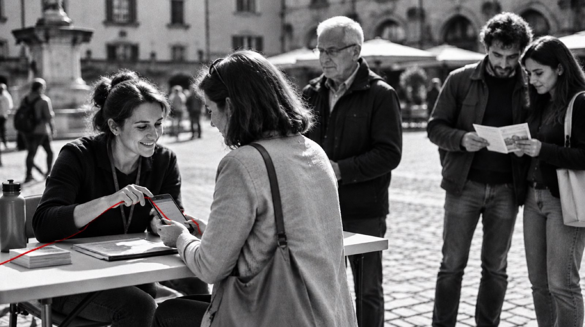

Le proposte di legge e i referendum che si possono firmare online: quante firme hanno, quanto manca, la scadenza e quanto è probabile che arrivino all'obiettivo.
Dati ufficiali, dalla piattaforma pubblica del Ministero della Giustizia, aggiornati ogni giorno.
Metodo dichiarato: confronto tra il ritmo delle firme e quello che servirebbe fino alla scadenza.
Per firmare si va sulla piattaforma con SPID o CIE: qui c'è il link diretto.

agenti civici · Raccolte firme
Fotografia illustrativa generata con intelligenza artificiale.